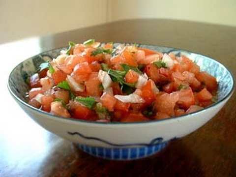

Ingredients:
1 jalapeno or 3 dried chiles de arbol (use 1/2 bell pepper if you don't like spicy foods)
1/2 onion (optional)
cilantro (optional)
water
salt
Directions:
- Boil all the ingredients in a sauce pan for 5 minutes.
- Blend the tomato, jalapeno, and onion. Season with a little salt
- That's it!